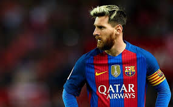
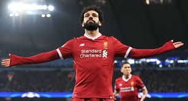
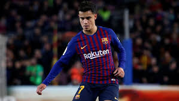

Antoine Griezmann
Antoine Griezmann (21 de marzo de 1991) futbolista, delantero del Club Atlético de Madrid de la Primera División de España. Nació en la comuna de Mâcon, Saona y Loira, Borgoña, Francia. Sus padres son: Alain Griezmann e Isabelle Griezmann. Heredo el gusto por el fútbol de su padre y su abuelo, quien fue futbolista. El pequeño Griezmann admiraba al delantero brasileño Sony Anderson. comenzó su formación en el equipo local de su población natal, la Unión du Football Mâconnais (UF Mâcon). Luego de algún tiempo, realizó pruebas con varios clubes profesionales franceses, pero ninguna de ellas se decidió a ficharlo, dada su entonces débil constitución física.
Aunque aburrido por la situación no dejó morir su sueño. En su infancia era seguidor del Olympique de Lyon e intentó también entrar en la academia Ver más...

Lionel Messi
Lionel Andrés Messi Cuccittini, conocido cómo Lionel Messi o simplemente “Lio”, es un futbolista argentino que nació en Rosario, provincia de Santa Fe, el 24 de junio de 1987 y actúa como delantero o extremo derecho.
Viene de familia de escasos recursos económicos, conformada por su padre Jorge Horacio Messi trabajador de una fábrica y su madre Celia María Cuccittini trabajadora de oficios varios. Su abuela materna Celia Olivera, fue quien lo impulsó y motivó a tomar el fútbol como carrera profesional, por eso en el año 1992 cuando tenía 5 años empezó su formación como futbolista en el club.
Abanderado Grandoli, que era uno de los equipos formativos de Rosario. En el año 1994, Lionel Messi arrancó su paso por las divisiones inferiores Ver más...

Hirving Lozano
Hirving Rodrigo Lozano Bahena (30 de julio de 1995) Nació en Ciudad de México, México. Futbolista mexicano, conocido como el “Chucky”, es recordado por su gol en el Mundial de Rusia 2018, ante Alemania. Hijo de Jesús Lozano y Ana María Bahena.
Desde pequeño se interesó por el fútbol, esta pasión fue notada por un visor del club deportivo Pachuca, el cual invita a Hirving Lozano de solo 10 años a unirse en la categoría de inferiores del deportivo, razón por la cual Lozano se traslada al Estado de Hidalgo, donde se desarrolla su entrenamiento y lleva a cabo sus estudios.
Lozano escaló poco a poco las categorías y posteriormente hace su debut con el Pachuca en la primera categoría el 8 de febrero de 2014, ante el América en el Estadio Azteca, ese día marco su primer gol con el equipo.
Dos años más tarde Lozano gana su primera copa Ver más...

Cristiano Ronaldo
Cristiano Ronaldo Dos Santos Aveiro, es un futbolista portugués que juega como delantero y es considerado como uno de los mejores delanteros del mundo del fútbol. Nació en Funchal, Madeira el 5 de febrero de 1985 y es hijo de María Dolores dos Santos Aveiro y José Dinis Aveiro. Desde niño siempre mostró su buen desempeño en el fútbol y se destacó por su habilidad con la pelota.
Sus inicios se dieron a la edad de 8 años cuando ingresó a la escuela de fútbol La Andorinha y donde rápidamente empezó a sobresalir por encima de los compañeros de su edad. Tanta era la calidad que mostraba Cristiano, que a la edad de 10 años los clubes C. S. Marítimo y C. D. Nacional mostraron interés Ver más...

Mohamed Salah
Mohamed Salah Ghaly (15 de junio de 1992) futbolista profesional. Nació en Nagrig, Egipto. Actualmente juega como extremo en el Liverpool de la Premier League de Inglaterra. Además, es internacional con la selección de Egipto. Salah se destacó en el fútbol desde temprana edad. Sus padres le ayudaron a ingresar al Mokawloon Al-Arab y luego paso al Arab Contractors. Rápidamente, fue convocado en las divisiones menores de la selección egipcia. También participó en la Copa Mundial Sub-20 de la FIFA y en los Juegos Olímpicos de Verano de 2012.
Para ese año, el Basel solicitó sus servicios. El jugador africano ganó la Super Liga Suiza en su primera temporada, siendo galardonado con el premio al Futbolista del año en África. Ha demostrado desde sus inicios su liderazgo dentro y fuera de la cancha. Es un Ver más...

Philippe Coutinho
Philippe Coutinho Correia (12 de junio de 1992) futbolista profesional. nació en Río de Janeiro, Brasil. Actualmente es centrocampista en el equipo español Fútbol Club Barcelona. Sus inicios se dieron en el fútbol sala, una vertiente del fútbol que es muy popular en Brasil. Es un jugador dotado de gran técnica, su juego ha sido comparado con el de Zico o Ronaldinho. Durante su vida deportiva ha desempeñado la posición de centrocampista ya sea ofensivo o de extremo. Claramente no es un buen defensa ya que no es un jugador muy veloz.
Pero posee una visión del juego que le posibilita anticipar la jugada. En suma, su calidad en el pase hace de él un gran proveedor de asistencias. Es uno de los jugadores diestros que tiene gran efectividad con la zurda, lo cual convierte sus tiros en imprevisibles.Ver más...